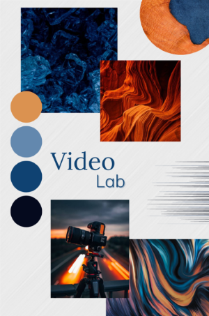
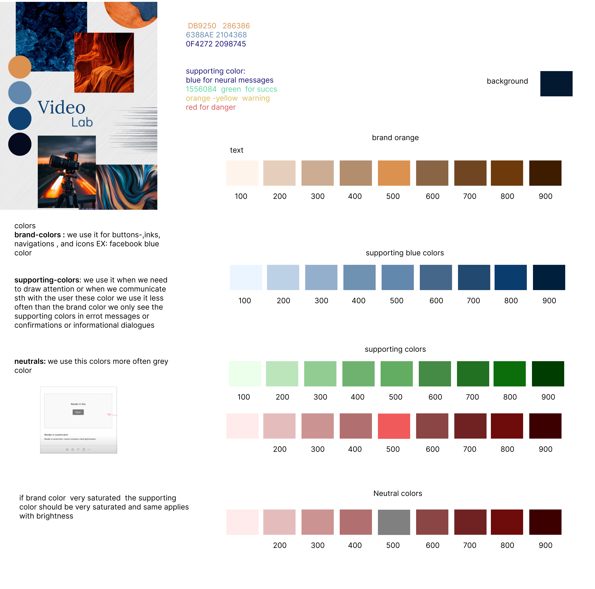

In this phase:
- Interviews, surveys, and a style guide with a color scheme were conducted.
- A moodboard was generated to capture the visual direction and aesthetic preferences for the tutorial website.


 1.png)
- HMW and POV were created.
User scenario: Stefan, a 21-year-old media student, starts his day by drinking a fresh cup of coffee and checking his daily schedule. After a delicious breakfast, he sits down at his laptop to plan his day. Today, he's excited about a video project, so he visits the university's video lab website. With a few clicks, he finds the exact information that he needs. In the meantime, he starts to watch a short tutorial on the website to familiarize himself with the lab's setup. Feeling more confident, he heads to campus for his morning classes, knowing he has an exciting afternoon ahead. After class, he arrives at the video lab, he is so confident that he learned everything so he starts with the work immediately. Stefan spends a productive few hours working on his project, applying the skills he learned from the morning's video tutorial and the interactive simulations on the website. As the sun sets, Stefan wraps up his work at the lab and heads home, satisfied with the progress he's made. Back at his apartment, he checks the lab website one last time, just to stay updated on any contests or news. With his creative tasks completed for the day, Stefan can relax and unwind, knowing that his journey to become a skilled video producer is well underway.
Implemented the final design of the tutorial website based on the high-fidelity prototype. Conducted user testing to evaluate the website's usability, functionality, and overall user experience.
Final prototype version in Figma
.png)
.png)
.png)
.png)